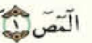

ተጅዊድ
የሱራ መጀመሪያ ሀርፎች
አንዳንድ የቁርአን ሱራዎች በ ሀርፎች/ፊደሎች የሚጀምሩ አሉ። እነዚህንም ሀርፎች በሁለት አይነት መልኩ ለይተን ማየት እንችላለን።
- በደንብ(6 ሀርካ) መሳብ ያለባቸው
- በትንሹ የሚሳቡ
በደንብ የሚሳቡ
አንድ ሀርፍ የሱራ መጀመሪያ ሆኖ ሲመጣ በደንብ እንዲሳብ የግድ ሶስት መስፈርቶችን ማሟላት አለበት። እነሱም
- ሀርፉ ከ ሶስት ሀርፍ የተዋቀረ መሆን
- የመጨረሻው ፊደል ስኩን መሆን
- የመሀለኛው ፊደል ሀርፈል መድ መሆን
አንድ ሀርፍ እነዚህን ሶስት መስፈርት አሟልቶ ከመጣ በደንብ / ስድስት ሀረካ ያህል መሳብ ይኖርብናል።
| ሀርፍ |
አወቃቀር |
ሶስት ፊደል |
መጨረሻው ስኩን |
መሃሉ መድ |
| أ |
ألف |
|
|
|
| ل |
لام |
|
|
|
| م |
ميم |
|
|
|
| ر |
را |
|
|
|
በደንብ የሚሳቡ ፊደሎች
ከላይ የጠቀስናቸውን ሶስት መስፈርቶች አሟልተው የሚመጡት ስምንት ሀርፍ ናቸው። እነሱም
- ኑን ( ن )
- ቃፍ( ق )
- ሷድ( ص )
- ዐይን( ع )
- ሲን( س )
- ላም( ل )
- ካፍ( ك )
- ሚም( م )
እነዚህን ፊደሎች ለማስታወስ ነቀሶ ዐሰሉኩም ( نقص عسلكم ) የሚለውን መሸምደድ በቂ ነው።
በደንብ የማይሳቡ
አንድ ሀርፍ የሱራ መጀመሪያ ሆኖ ሲመጣ በደንብ የማይሳሰበው የዛ ሀርፍ አወቃቀር ከሁለት ሀርፍ ሲሆን ነው። እንዚህ ሀርፎችም ሁለት ሀረካ ይሳባሉ።
በደንብ የማይሳቡ ፊደሎች
በደንብ የማይሳቡ ሀርፎች አምስት ሲሆኑ ፤ እነሱም
- ሃ ( ح )
- ያ ( ي )
- ጧ ( ط )
- ሓ ( ه )
- ራ ( ر )
እነዚህን ፊደሎች ለማስታወስ ሀዩን ጦሁር ( حي طهر ) የሚለውን መሸምደድ በቂ ነው።
ምሳሌዎች
- 

ማስታወሻ ፡ ከላይ ከጠቀስናቸው 13 ፊደሎች(8+5) ውስጥ የሁለቱንም መስፈርት ስለማታሟላ አሊፍን ያለ መድ/መሳቢያ እናነባተለን ማለት ነው።